長期トレンド
JKMとJEPXシステムプライスの推移グラフ
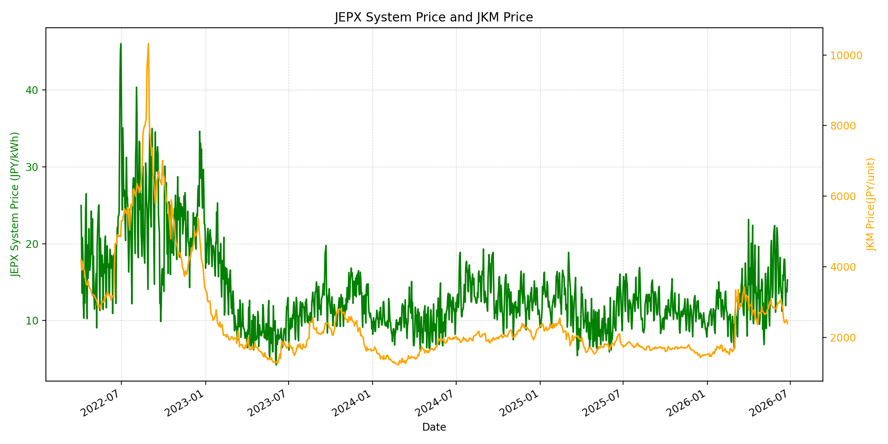
WTIの推移グラフ
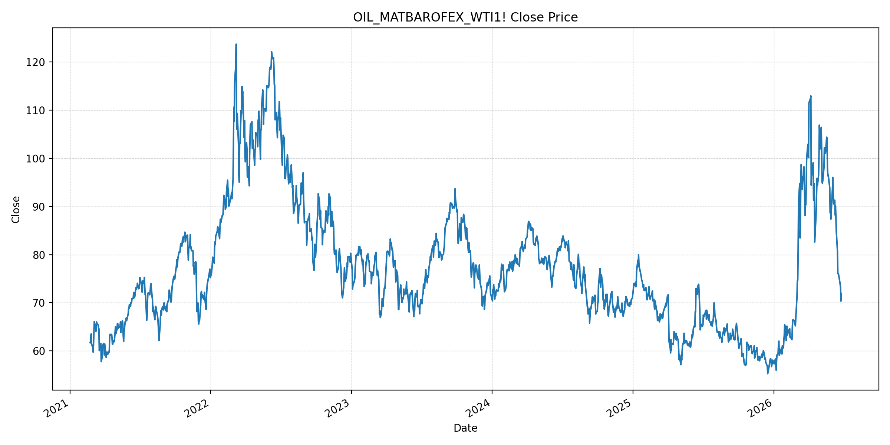
JEPXエリアプライスグラフ（直近一年分）
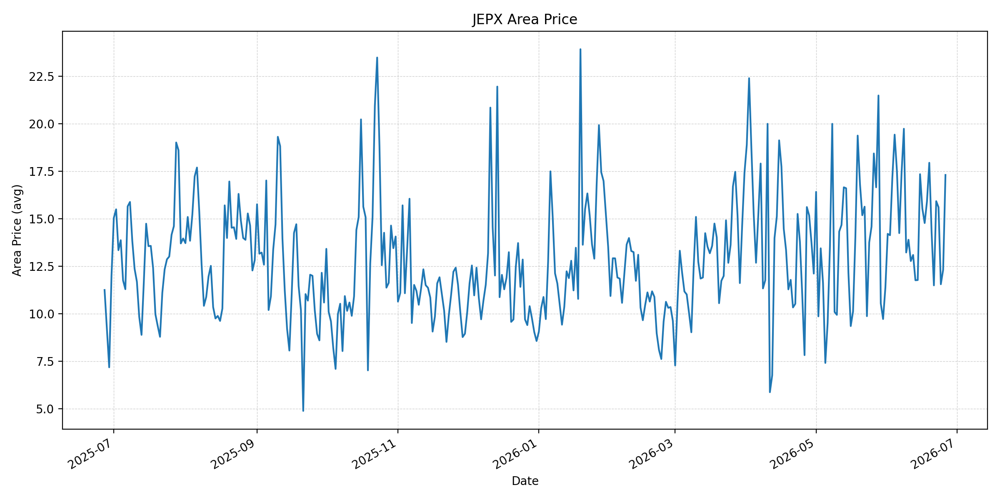
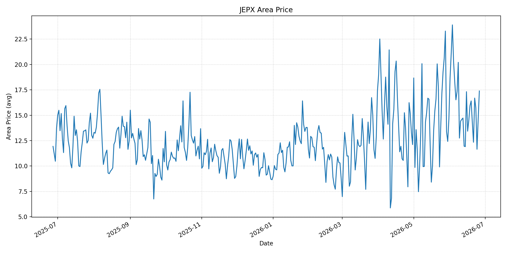
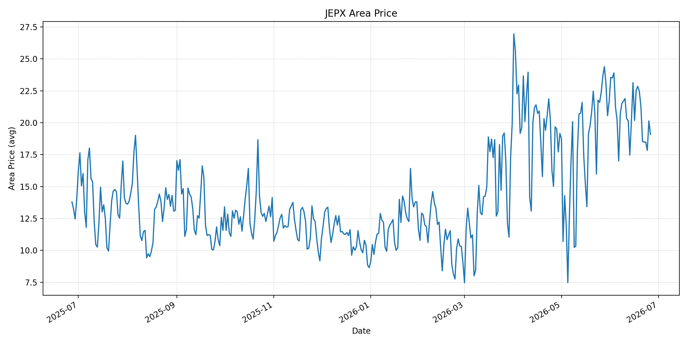
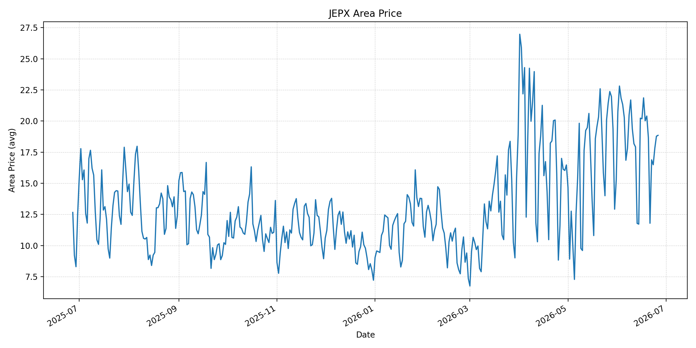
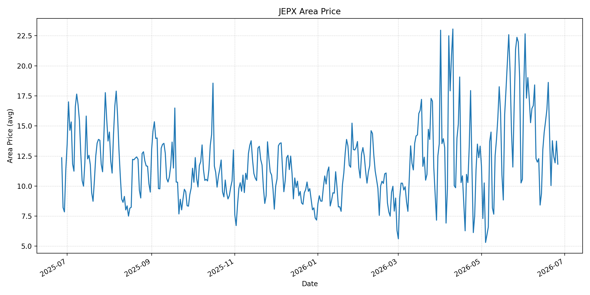
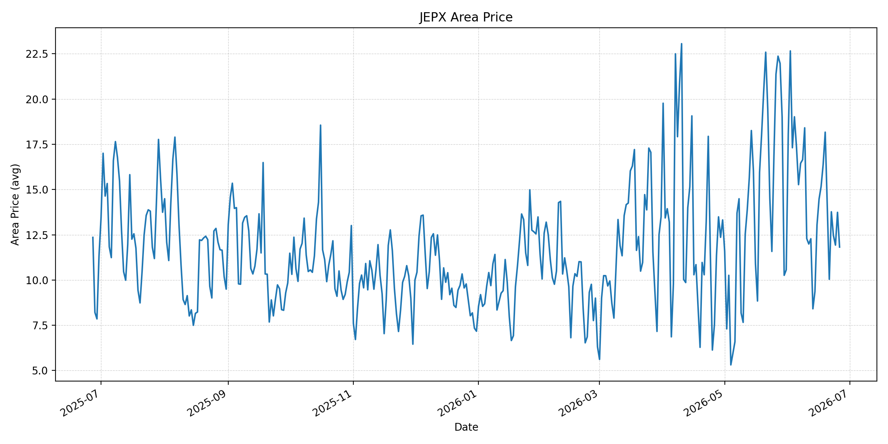
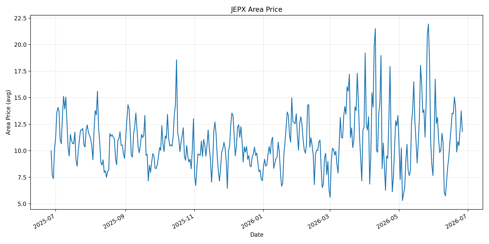
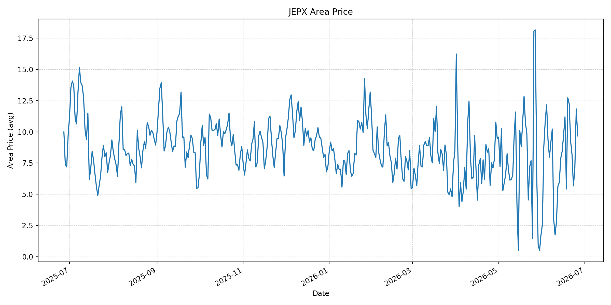
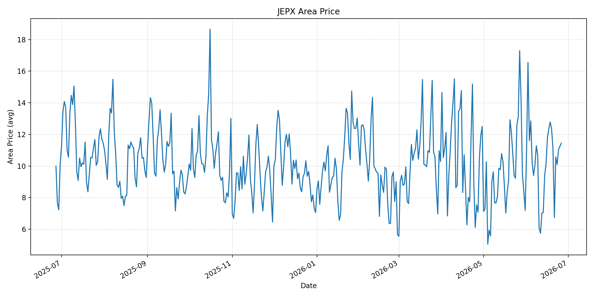
短期トレンド
JKMとJEPXシステムプライスの推移グラフ
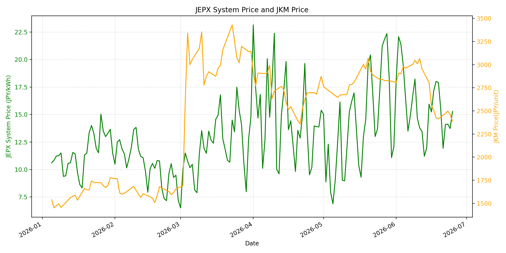
WTIの推移グラフ
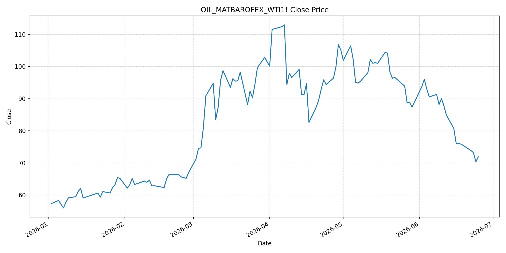
JEPXシステムプライス
JEPXは受渡日ベースの最新非空値で評価しています。最新値は 2026-06-26 分です。先週終値は 2026-06-19 時点の直近値、先月終値は 2026-05-31 時点の直近値で評価しています。
| エリア | 当日価格 | 前日価格 | 前日比（％） | 先週終値 | 先週比（％） | 先月終値 | 先月比（％） | 過去最高値 | 最高値比（％） |
|---|---|---|---|---|---|---|---|---|---|
| システム | 15.03 | 15.28 | -1.64 | 17.92 | -16.13 | 12.10 | 24.21 | 64.06 | -76.54 |
| 北海道 | 17.30 | 12.31 | 40.54 | 17.94 | -3.57 | 11.38 | 52.02 | 73.92 | -76.60 |
| 東北 | 17.39 | 14.62 | 18.95 | 16.41 | 5.97 | 14.64 | 18.78 | 84.92 | -79.52 |
| 東京 | 19.09 | 20.14 | -5.21 | 22.45 | -14.97 | 21.65 | -11.82 | 86.13 | -77.84 |
| 中部 | 18.85 | 18.78 | 0.37 | 20.40 | -7.60 | 15.25 | 23.61 | 52.06 | -63.79 |
| 北陸 | 11.82 | 13.74 | -13.97 | 18.62 | -36.52 | 10.56 | 11.93 | 46.48 | -74.57 |
| 関西 | 11.82 | 13.74 | -13.97 | 18.17 | -34.95 | 10.56 | 11.93 | 46.48 | -74.57 |
| 中国 | 11.82 | 13.74 | -13.97 | 15.06 | -21.51 | 7.66 | 54.31 | 46.48 | -74.57 |
| 四国 | 9.67 | 11.84 | -18.33 | 12.73 | -24.04 | 1.74 | 455.75 | 46.48 | -79.20 |
| 九州 | 11.44 | 11.25 | 1.69 | 12.33 | -7.22 | 7.20 | 58.89 | 40.54 | -71.78 |
LNG先物価格
最新値は 2026-06-25 の LNG(close) です。先週終値は 2026-06-18 時点の直近値、先月終値は 2026-05-29 時点の直近値で評価しています。
| 当日価格 | 前日価格 | 前日比（％） | 先週終値 | 先週比（％） | 先月終値 | 先月比（％） | 過去最高値 | 最高値比（％） |
|---|---|---|---|---|---|---|---|---|
| 2386.00 | 2461.00 | -3.05 | 2427.00 | -1.69 | 2826.00 | -15.57 | 10319.00 | -76.88 |
石油先物価格
最新値は 2026-06-25 の OIL(close) です。先週終値は 2026-06-18 時点の直近値、先月終値は 2026-05-29 時点の直近値で評価しています。
| 当日価格 | 前日価格 | 前日比（％） | 先週終値 | 先週比（％） | 先月終値 | 先月比（％） | 過去最高値 | 最高値比（％） |
|---|---|---|---|---|---|---|---|---|
| 71.92 | 70.34 | 2.25 | 75.85 | -5.18 | 87.36 | -17.67 | 123.70 | -41.86 |
ニュース
イラン情勢に関するニュース
- 2026年6月25日、Guardianは、イランがUN/IMOとオマーンが支援するホルムズ海峡からの船舶退避案を拒否したと報じました。イラン革命防衛隊は代替航路を「受け入れ不能で危険」とし、通航にはIRGC海軍との調整が必須だと主張しています。 参照: The Guardian, 2026-06-25
- 同報道では、イランと米国の60日間協議において、ホルムズ管理、通航料、制裁解除、核問題、レバノン南部のイスラエル撤退が交渉上の争点として残るとされています。イラン側は海峡の戦前状態への完全回帰を否定しています。 参照: The Guardian, 2026-06-25
ホルムズ海峡経由の石油・LNGに関するニュース
- 2026年6月25日、Guardianは、ホルムズ海峡から出るタンカーが増え、Brent原油が一時 72.24 ドル/バレルまで下落し、2月28日の米イスラエル攻撃前水準に戻ったと報じました。過去24時間の船舶通航は2倍になったとされています。 参照: The Guardian, 2026-06-25
- 一方でMarketWatchは2026年6月25日、イラン当局が少なくとも3隻の石油タンカーに引き返しを命じ、追加の船舶も進路を戻したようだと報じました。これを受け、米原油とBrent先物はそれぞれ2％超上昇し、通航正常化の脆さが意識されています。 参照: MarketWatch, 2026-06-25
ホルムズ海峡経由でない石油・LNGに関するニュース
- 過去24時間で、日本向けの非ホルムズ新規大型調達やLNG長期契約を示す強い追加報道は確認できませんでした。Guardianが報じた原油安は、非ホルムズ調達拡大ではなく、ホルムズ海峡を出るタンカー増加と短期供給余剰が主因です。 参照: The Guardian, 2026-06-25
- MarketWatchは、供給過剰感が短期的なものにとどまる可能性を指摘し、停戦履行、通航料、機雷除去、OPEC対応が中東油流の正常化を左右するとしています。非ホルムズ経路は補完策であり、現時点では価格形成の主因ではありません。 参照: MarketWatch, 2026-06-25
日本国内のイラン戦争に関係するニュース
- 過去24時間で、JEPX制度、国内電力需給ルール、または日本政府の対イラン戦争関連対策を直接変更する主要な新規公表は確認できませんでした。
- 関連する国内材料として、経済産業省は2026年5月20日、2026年度夏季は全エリアで安定供給に最低限必要な予備率3％を確保できるため節電要請を実施しないと発表しています。一方で、国際情勢の変化、異常気象、火力発電所の地域集中はリスクとして明記されています。 参照: 経済産業省, 2026-05-20
インサイト
ニュース事項による日本の電力市場への影響（短期：数日〜1週間）
- JEPXシステムプライスは 15.03 円/kWhで前日比 -1.64%、先週比 -16.13% です。東京は 19.09 円/kWhで前日比 -5.21% となり、原油が戦争前水準に戻ったことは短期の燃料コスト心理を下げています。
- LNGは 2386.00 で前日比 -3.05%、先月比 -15.57% と下落しています。一方、OILは 71.92 で前日比 2.25% と反発しており、イランによるタンカー引き返し命令が出ると燃料安の効果はすぐに削られます。
- 北海道は 17.30 円/kWhで前日比 40.54%、東北は 17.39 円/kWhで前日比 18.95% と上昇しました。数日〜1週間では燃料価格の下押しが残る一方、エリア別需給とホルムズ通航ニュースがスポット価格を振らしやすいです。
ニュース事項による日本の電力市場への影響（長期：1ヶ月〜半年）
- ホルムズ通航が安定すれば、LNGは過去最高値比 -76.88%、OILは -41.86% と低い水準にあり、日本の燃料費見通しは改善しやすいです。ただしGuardianが報じるUN/IMO案拒否は、通航ルールがまだ恒久化していないことを示します。
- イランが海峡管理を交渉カードとして維持する限り、船腹、保険、通航調整のコストは1ヶ月〜半年の燃料調達に残ります。スポット原油が一時的に下がっても、長期契約や燃料費調整に反映される前にリスクプレミアムが戻る可能性があります。
- 国内では節電要請なしの前提が維持されていますが、システム価格は先月比 24.21% と高く、北海道は先月比 52.02% です。燃料安だけではなく、夏季需要と地域別供給力がJEPXを下支えする構図が続きます。